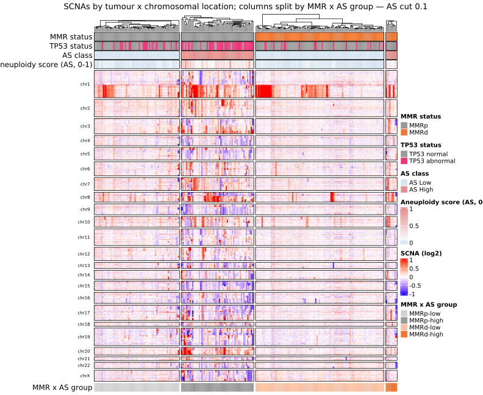
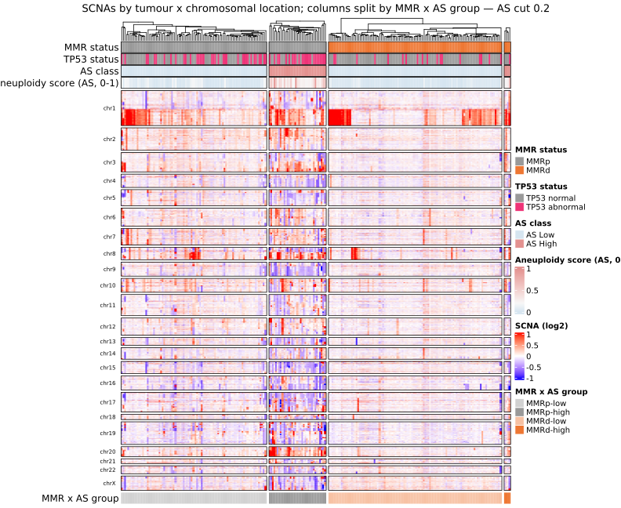
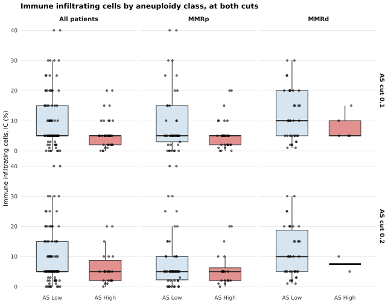
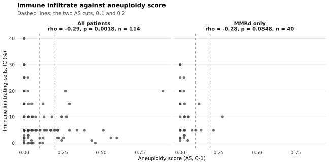
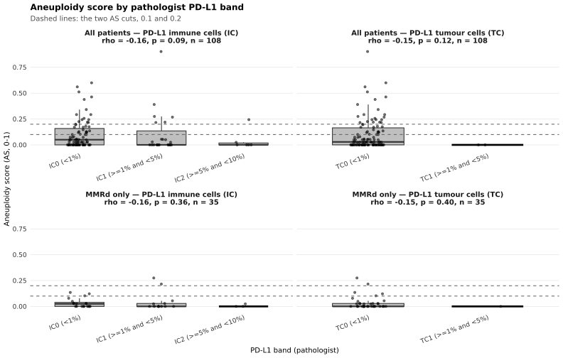
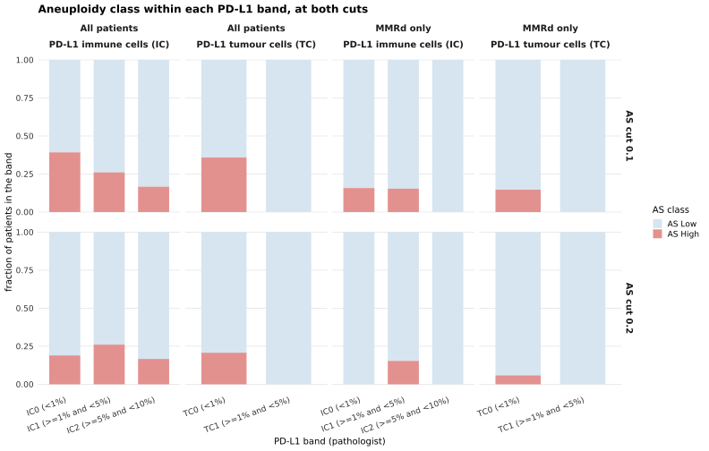

Last updated: 2026-09-25
Checks: 7 0
Knit directory:
attend_aneuploidy/analysis/
This reproducible R Markdown analysis was created with workflowr (version 1.7.2). The Checks tab describes the reproducibility checks that were applied when the results were created. The Past versions tab lists the development history.
Great! Since the R Markdown file has been committed to the Git repository, you know the exact version of the code that produced these results.
Great job! The global environment was empty. Objects defined in the global environment can affect the analysis in your R Markdown file in unknown ways. For reproduciblity it’s best to always run the code in an empty environment.
The command set.seed(20260622) was run prior to running
the code in the R Markdown file. Setting a seed ensures that any results
that rely on randomness, e.g. subsampling or permutations, are
reproducible.
Great job! Recording the operating system, R version, and package versions is critical for reproducibility.
Nice! There were no cached chunks for this analysis, so you can be confident that you successfully produced the results during this run.
Great job! Using relative paths to the files within your workflowr project makes it easier to run your code on other machines.
Great! You are using Git for version control. Tracking code development and connecting the code version to the results is critical for reproducibility.
The results in this page were generated with repository version 53d4271. See the Past versions tab to see a history of the changes made to the R Markdown and HTML files.
Note that you need to be careful to ensure that all relevant files for
the analysis have been committed to Git prior to generating the results
(you can use wflow_publish or
wflow_git_commit). workflowr only checks the R Markdown
file, but you know if there are other scripts or data files that it
depends on. Below is the status of the Git repository when the results
were generated:
Ignored files:
Ignored: .Rhistory
Ignored: .Rproj.user/
Ignored: .mcr_cache/
Ignored: data/aneu_scores.csv
Ignored: data/attend_barcodes.csv
Ignored: data/attend_data.xlsx
Ignored: data/clinical_gianlu_data.csv
Ignored: data/cnv_annotations/
Ignored: data/gistic/
Ignored: data/hrd_scores.csv
Ignored: data/msi_scores.csv
Ignored: data/old2_gistic/
Ignored: data/old_gistic/
Ignored: data/seg/
Ignored: data/tcga_2013/
Ignored: data/tmb_scores.csv
Ignored: data/variant_annotations/
Ignored: gistic2.sif
Ignored: output/clean_data/
Ignored: output/gistic_input/
Note that any generated files, e.g. HTML, png, CSS, etc., are not included in this status report because it is ok for generated content to have uncommitted changes.
These are the previous versions of the repository in which changes were
made to the R Markdown (analysis/12-aneuploidy-immune.Rmd)
and HTML (docs/12-aneuploidy-immune.html) files. If you’ve
configured a remote Git repository (see ?wflow_git_remote),
click on the hyperlinks in the table below to view the files as they
were in that past version.
| File | Version | Author | Date | Message |
|---|---|---|---|---|
| html | 53d4271 | sceriff0 | 2026-09-25 | :wrench: site building |
| Rmd | f4b049c | bolt3x | 2026-09-21 | :sparkles: Report 12 — copy number by MMR x AS group, and the immune / PD-L1 calls |
Question. How is copy number laid out across the four MMR × aneuploidy groups, does aneuploidy track the pathologist’s immune infiltrate and PD-L1 calls, and does either answer depend on where the aneuploidy cut is put? Cohort. All 245 patients on the master, with MMR-deficient patients beside them in the PD-L1 panels; the heatmap needs GISTIC output and the immune panels need a pathologist imaging call — each figure drops only its own missing values and prints how many. Reads. GISTIC all_data_by_genes.txt in data/gistic/ (runbooks/gistic.md), the “Imaging (2)” sheet of data/attend_data.xlsx, and attend_master_joined. Out of scope. Data-driven copy-number clusters -> 07-molecular-classification. Which peaks recur in each group -> 10-recurrent-cna. FlowPath composition by aneuploidy, MMRd only -> 04-aneuploidy-mmrd. The aneuploidy classes, the two cuts and why both are reported -> 00-methods.
The four groups are add_scna_group(): MMR status from MMR IHC (is_mmrd(), MSI not a criterion) crossed with aneuploidy class. A patient missing either input has no group. Every aneuploidy-keyed figure in this report is drawn at both cuts, 0.1 and 0.2 — attend_thresholds$aneuploidy and $aneuploidy_alt. The first is the pipeline’s primary and the one the master’s own aneuploidy_class carries; the second had never been measured against it, which is why both are shown rather than one replacing the other. The table below is the cost of the choice in patients.
cw <- tryCatch(
build_barcode_pid(load_gianlu_clinical_data(), make_id_cfg()),
error = function(e) { note_skip("crosswalk unavailable: ", conditionMessage(e)); NULL }
)
master_cuts |>
count(as_cut_lab,
scna_group = replace_na(as.character(scna_group), "no group (MMR or AS missing)")) |>
pivot_wider(names_from = as_cut_lab, values_from = n, values_fill = 0)# A tibble: 5 × 3
scna_group `AS cut 0.1` `AS cut 0.2`
<chr> <int> <int>
1 MMRd-high 9 4
2 MMRd-low 100 105
3 MMRp-high 57 35
4 MMRp-low 67 89
5 no group (MMR or AS missing) 12 12Which patients change class between the cuts, and in which direction. A patient counted off the diagonal is AS High at 0.1 and AS Low at 0.2; nothing can move the other way, because raising a cut can only demote. Where that count is a large fraction of the AS High arm, the two halves of every figure below are not two views of one result.
lo_lab <- paste0("AS cut ", min(cuts)); hi_lab <- paste0("AS cut ", max(cuts))
master_cuts |>
filter(!is.na(aneuploidy_class)) |>
select(pid, as_cut, aneuploidy_class) |>
mutate(as_cut = ifelse(as_cut == min(cuts), "lo", "hi")) |>
pivot_wider(names_from = as_cut, values_from = aneuploidy_class) |>
transmute(!!lo_lab := as_label(lo), !!hi_lab := as_label(hi)) |>
count(.data[[lo_lab]], .data[[hi_lab]], name = "patients")# A tibble: 3 × 3
`AS cut 0.1` `AS cut 0.2` patients
<chr> <chr> <int>
1 AS High AS High 39
2 AS High AS Low 27
3 AS Low AS Low 167The layout of Kandoth et al. Fig. 1a — tumours as columns, genes as rows in chromosomal order, red gain and blue loss — with one change: the column blocks are not copy-number clusters but the four pre-defined groups, left to right MMRp AS Low, MMRp AS High, MMRd AS Low, MMRd AS High. The body is GISTIC’s all_data_by_genes.txt (genome-wide, continuous, not peak-restricted; data/gistic/, from the DRAGEN .seg), the same display matrix report 07 draws. Nothing is clustered into groups: within a block, tumours are only ordered by the pipeline’s configured pair (euclidean distance, ward.D2 linkage) so similar profiles sit together. One heatmap per cut — same tumours, same matrix, only the column split and the aneuploidy annotation bar move. The cut is passed in explicitly (aneu_cut =), because the bar derives its own high/low split and would otherwise take the configured primary cut in both figures and contradict the blocks beneath it. Since aneuploidy class defines the blocks and comes from arm-level ASCETS calls on these same tumours, the AS High blocks looking more altered is true by construction and is not evidence of anything; what the figure shows is where on the genome each group’s burden sits. Colour limits are ±98th percentile of |value|.
disp_mat <- tryCatch(load_gistic_continuous(), error = function(e) NULL)
if (is.null(disp_mat)) {
note_skip("No GISTIC all_data_by_genes.txt under data/gistic/ — run GISTIC per ",
"runbooks/gistic.md. The heatmaps are skipped; Part 2 does not need them.")
} else if (is.null(cw)) {
note_skip("No barcode -> pid crosswalk, so GISTIC columns cannot be given a group.")
} else {
hm0 <- as.matrix(disp_mat[, setdiff(names(disp_mat), "ID"), drop = FALSE])
rownames(hm0) <- disp_mat$ID
pid_v <- cw$pid[match(rownames(hm0), cw$barcode)]
fpos <- attr(disp_mat, "feature_pos")
cyto <- if (!is.null(fpos)) setNames(fpos$cytoband, fpos$feature) else NULL
cat("ComplexHeatmap installed:", requireNamespace("ComplexHeatmap", quietly = TRUE),
"| circlize installed:", requireNamespace("circlize", quietly = TRUE), "\n")
for (k in cuts) {
mc <- master_cuts |> filter(as_cut == k)
grab <- function(col) mc[[col]][match(pid_v, mc$pid)] # keyed on the matrix's barcodes
grp <- factor(as.character(grab("scna_group")), levels = attend_scna$group_levels)
names(grp) <- rownames(hm0)
keep <- !is.na(grp)
cat("\n--- AS cut", k, "---\nGISTIC samples:", nrow(hm0), "| with a group:", sum(keep),
"| dropped (no pid, or MMR / AS missing):", sum(!keep), "\n")
print(table(group = grp[keep]))
hm <- hm0[keep, , drop = FALSE]
grp <- droplevels(grp[keep])
# The same covariate bars report 07 draws, built from the master so they agree with the
# blocks. The binary AS bar is derived inside .fig1a_top_annotation() at the cut passed
# below, not at the configured primary one.
ids <- rownames(hm)
mmrd <- is_mmrd(grab("MMR_class")[keep])
ann <- data.frame(
MMR = factor(ifelse(is.na(mmrd), NA, ifelse(mmrd, "MMRd", "MMRp")), levels = c("MMRp", "MMRd")),
Aneuploidy = suppressWarnings(as.numeric(grab(attend_cols$aneuploidy)[keep])),
row.names = ids)
tp <- grab("TP53_pathogenic")[keep]
if (!all(is.na(tp)))
ann$TP53 <- factor(ifelse(as.logical(tp), "mut", "wt"), levels = c("wt", "mut"))
feat_pos <- feature_positions(colnames(hm), cytoband = cyto)
cat("genes with a position:", sum(feat_pos$feature %in% colnames(hm)), "\n")
if (nrow(hm) >= 2 && nlevels(grp) >= 1) {
fig1a_heatmap(hm, feat_pos, grp, ann_col = ann, value_type = "continuous",
cluster_cols = attend_scna_cols, cluster_name = "MMR x AS group",
column_distance = cnv_dist, column_linkage = cnv_method,
aneu_cut = k,
main = paste0("SCNAs by tumour x chromosomal location; columns split by ",
"MMR x AS group — AS cut ", k))
} else {
note_skip("AS cut ", k, ": fewer than two GISTIC samples carry a group; nothing to draw.")
}
}
}ComplexHeatmap installed: TRUE | circlize installed: TRUE
--- AS cut 0.1 ---
GISTIC samples: 247 | with a group: 234 | dropped (no pid, or MMR / AS missing): 13
group
MMRp-low MMRp-high MMRd-low MMRd-high
67 57 101 9
genes with a position: 27100
--- AS cut 0.2 ---
GISTIC samples: 247 | with a group: 234 | dropped (no pid, or MMR / AS missing): 13
group
MMRp-low MMRp-high MMRd-low MMRd-high
89 35 106 4
genes with a position: 27100 
| Version | Author | Date |
|---|---|---|
| 53d4271 | sceriff0 | 2026-09-25 |

| Version | Author | Date |
|---|---|---|
| 53d4271 | sceriff0 | 2026-09-25 |
The per-group GISTIC runs on disk (data/gistic/mmrd_high/ and its siblings) were prepared from the primary cut. Nothing here reads them — both heatmaps are built from the pooled genome-wide matrix and split in memory — but 10-recurrent-cna does, so its peaks remain a 0.1-cut result until those runs are regenerated.
All three measures come from the “Imaging (2)” sheet of data/attend_data.xlsx, read by load_imaging_data(), one row per image, keyed by pid. IC % is Immune infiltrating cells (%), continuous, averaged over a patient’s images. The two PD-L1 measures are banded calls, not percentages: Percentage of tumor-infiltrating immune cells (IC) expressing PD-L1 (IC0 < 1%, IC1 1–5%, IC2 5–10%, …) and Percentage of tumor cells (TC) expressing PD-L1 (TC0, TC1, …). They are ordered by the digit after the prefix, a blank cell is not measured (NA, never band 0), and a patient’s first non-missing band across images is used — the same rule reports 04 and 05 apply. Aneuploidy score, class (at both cuts) and MMR group are joined from the master.
first_nonNA <- function(x) { x <- x[!is.na(x) & x != ""]; if (length(x)) x[1] else NA }
# Order banded calls by the number after the letters: IC0 < IC1 < IC2 < IC3. Alphabetical
# order happens to agree up to 9 bands, but an explicit key keeps an unexpected spelling
# from being slotted in by string comparison.
band_factor <- function(x) {
x <- as.character(x)
lv <- unique(stats::na.omit(x))
key <- suppressWarnings(as.integer(sub("^[A-Za-z]+\\s*([0-9]+).*$", "\\1", lv)))
factor(x, levels = lv[order(key, lv, na.last = TRUE)])
}
imaging_raw <- tryCatch(load_imaging_data(), error = function(e) {
note_skip("imaging sheet unavailable: ", conditionMessage(e)); NULL })
imm <- NULL
if (!is.null(imaging_raw)) {
imm_pt <- imaging_raw |>
filter(!is.na(ID)) |>
group_by(pid = as.character(ID)) |>
summarise(
IC_pct = mean(suppressWarnings(as.numeric(Immune_infiltrate)), na.rm = TRUE),
PDL1_IC = first_nonNA(as.character(Immune_infiltrate_PDL1)),
PDL1_TC = first_nonNA(as.character(Tumor_cells_PDL1)),
.groups = "drop") |>
mutate(IC_pct = ifelse(is.finite(IC_pct), IC_pct, NA_real_),
PDL1_IC = band_factor(PDL1_IC),
PDL1_TC = band_factor(PDL1_TC))
# Joined to the LONG master, so every patient appears once per cut carrying the class that
# cut gives them. The score itself is cut-independent and identical in both blocks.
imm <- imm_pt |>
inner_join(master_cuts |>
transmute(pid, as_cut, as_cut_lab, aneuploidy_class, mmr_group,
aneuploidy_score = suppressWarnings(as.numeric(.data[[attend_cols$aneuploidy]]))),
by = "pid") |>
filter(!is.na(aneuploidy_score))
n_pt <- n_distinct(imm$pid)
cat("Patients on the master with an aneuploidy score and an imaging row:", n_pt,
"| MMR-deficient among them:",
n_distinct(imm$pid[!is.na(imm$mmr_group) & imm$mmr_group == "MMRd"]), "\n")
one <- imm |> filter(as_cut == min(cuts))
print(tibble(measure = c("IC %", "PD-L1 on immune cells (IC band)", "PD-L1 on tumour cells (TC band)"),
measured = c(sum(!is.na(one$IC_pct)), sum(!is.na(one$PDL1_IC)), sum(!is.na(one$PDL1_TC))),
not_measured = n_pt - measured))
}Patients on the master with an aneuploidy score and an imaging row: 114 | MMR-deficient among them: 40
# A tibble: 3 × 3
measure measured not_measured
<chr> <int> <int>
1 IC % 114 0
2 PD-L1 on immune cells (IC band) 108 6
3 PD-L1 on tumour cells (TC band) 108 6have_imm <- !is.null(imm) && n_distinct(imm$pid) > 2
# All patients and the MMRd subset as one factor, so a figure shows them side by side rather
# than being written twice — the shape report 05 uses for responder status. MMRd rows are a
# SUBSET of the all-patient rows, not an independent comparison.
with_cohorts <- function(d) {
bind_rows(d |> mutate(cohort = "All patients"),
d |> filter(!is.na(mmr_group), mmr_group == "MMRd") |> mutate(cohort = "MMRd only")) |>
mutate(cohort = factor(cohort, levels = c("All patients", "MMRd only")))
}IC % by AS class: columns are all patients and then each MMR group, rows are the two cuts. The within-MMR columns are there because MMR-deficient tumours are both more infiltrated and less often AS High, so a pooled difference can be MMR status seen twice; a difference that survives inside both strata cannot be. Wilcoxon rank-sum per panel, uncorrected, tabulated below the figure with each panel’s n — read the two rows against each other before reading either alone, since they are the same patients partitioned two ways.
if (have_imm && sum(!is.na(imm$IC_pct)) > 2) {
icd <- bind_rows(
imm |> mutate(panel = "All patients"),
imm |> filter(!is.na(mmr_group)) |> mutate(panel = as.character(mmr_group))) |>
filter(!is.na(IC_pct), !is.na(aneuploidy_class)) |>
mutate(panel = factor(panel, levels = c("All patients", "MMRp", "MMRd")))
print(
ggplot(icd, aes(aneuploidy_class, IC_pct, fill = aneuploidy_class)) +
attend_box(icd, x = "aneuploidy_class", y = "IC_pct", by = c("panel", "as_cut_lab"),
fill = NULL, points = FALSE) +
highlight_points(icd, "aneuploidy_class", "IC_pct", base_size = 1.2, base_alpha = 0.55,
base_const = "black") +
facet_grid(as_cut_lab ~ panel) +
scale_x_discrete(labels = as_label) +
scale_fill_manual(values = attend_aneu_cols, labels = as_label, name = attend_as_legend) +
labs(title = "Immune infiltrating cells by aneuploidy class, at both cuts",
x = NULL, y = "Immune infiltrating cells, IC (%)") +
attend_theme() + theme(legend.position = "none"))
icd |>
group_by(as_cut_lab, panel) |>
summarise(
n_AS_low = sum(grepl("low", aneuploidy_class)),
n_AS_high = sum(grepl("high", aneuploidy_class)),
wilcox_p = if (n_AS_low >= 2 && n_AS_high >= 2)
signif(wilcox.test(IC_pct[grepl("low", aneuploidy_class)],
IC_pct[grepl("high", aneuploidy_class)], exact = FALSE)$p.value, 3)
else NA_real_,
.groups = "drop")
} else {
note_skip("Fewer than three patients have both an IC % and an aneuploidy score.")
}
| Version | Author | Date |
|---|---|---|
| 53d4271 | sceriff0 | 2026-09-25 |
# A tibble: 6 × 5
as_cut_lab panel n_AS_low n_AS_high wilcox_p
<fct> <fct> <int> <int> <dbl>
1 AS cut 0.1 All patients 76 38 0.0273
2 AS cut 0.1 MMRp 41 33 0.204
3 AS cut 0.1 MMRd 35 5 0.589
4 AS cut 0.2 All patients 92 22 0.147
5 AS cut 0.2 MMRp 54 20 0.491
6 AS cut 0.2 MMRd 38 2 0.729 The same two measures without the class cut: aneu__aneuploidy_score on x against IC % on y, one point per patient, all patients and MMRd alone. This panel is what lets either cut be judged at all — it carries no class, so the two dashed lines (0.1 and 0.2) are the only thing the choice changes, and a reader can see whether either falls anywhere the data suggests a break. Spearman’s rho, because both variables are bounded and skewed and IC % is recorded in coarse steps, which makes ties common.
if (have_imm && sum(!is.na(imm$IC_pct)) > 2) {
ics <- imm |> filter(as_cut == min(cuts), !is.na(IC_pct)) |> with_cohorts()
rho_lab <- ics |>
group_by(cohort) |>
summarise(n = n(),
rho = unname(suppressWarnings(cor.test(aneuploidy_score, IC_pct,
method = "spearman", exact = FALSE))$estimate),
p = suppressWarnings(cor.test(aneuploidy_score, IC_pct,
method = "spearman", exact = FALSE))$p.value,
.groups = "drop") |>
mutate(strip = sprintf("%s\nrho = %.2f, p = %s, n = %d", cohort, rho,
format.pval(p, digits = 2), n))
ics <- ics |> left_join(rho_lab |> select(cohort, strip), by = "cohort")
ggplot(ics, aes(aneuploidy_score, IC_pct)) +
geom_vline(xintercept = cuts, linetype = 2, colour = "grey40") +
geom_point(size = 1.8, alpha = 0.7, colour = "grey25") +
facet_wrap(~ strip, nrow = 1) +
labs(title = "Immune infiltrate against aneuploidy score",
subtitle = paste("Dashed lines: the two AS cuts,", paste(cuts, collapse = " and ")),
x = attend_as_axis, y = "Immune infiltrating cells, IC (%)") +
attend_theme()
} else {
note_skip("Fewer than three patients have both an IC % and an aneuploidy score.")
}
| Version | Author | Date |
|---|---|---|
| 53d4271 | sceriff0 | 2026-09-25 |
The continuous aneuploidy score (y) within each pathologist PD-L1 band (x), for each marker on all patients and on MMR-deficient patients alone. Like the scatter above, this panel is cut-independent — the score is plotted raw — so the dashed lines are the only trace of the threshold, and a band whose spread straddles them is one whose class the choice decides. Because the bands are ordered, the test is a trend, not a difference between unordered groups: Spearman’s rho between band rank (0, 1, 2, …) and the score, printed in each panel’s strip. A band holding fewer than five patients is drawn as a median bar rather than a box.
pdl1_long <- NULL
if (have_imm) {
one_cut <- imm |> filter(as_cut == min(cuts))
pdl1_long <- bind_rows(
one_cut |> transmute(pid, aneuploidy_score, mmr_group, band = as.character(PDL1_IC),
rank = as.integer(PDL1_IC) - 1L, marker = "PD-L1 immune cells (IC)"),
one_cut |> transmute(pid, aneuploidy_score, mmr_group, band = as.character(PDL1_TC),
rank = as.integer(PDL1_TC) - 1L, marker = "PD-L1 tumour cells (TC)")) |>
filter(!is.na(band))
}
if (!is.null(pdl1_long) && nrow(pdl1_long) > 2) {
# Band order within each marker, carried into one factor so the x axis reads IC0..ICn then
# TC0..TCn; free_x drops the other marker's bands from each panel.
pdl1_long$band <- factor(pdl1_long$band,
levels = unique(pdl1_long$band[order(pdl1_long$marker, pdl1_long$rank)]))
pb <- with_cohorts(pdl1_long)
trend <- pb |>
group_by(cohort, marker) |>
summarise(n = n(), n_bands = n_distinct(rank),
rho = if (n_bands > 1) unname(suppressWarnings(
cor.test(rank, aneuploidy_score, method = "spearman", exact = FALSE))$estimate) else NA_real_,
p = if (n_bands > 1) suppressWarnings(
cor.test(rank, aneuploidy_score, method = "spearman", exact = FALSE))$p.value else NA_real_,
.groups = "drop") |>
mutate(strip = sprintf("%s — %s\nrho = %.2f, p = %s, n = %d", cohort, marker, rho,
format.pval(p, digits = 2), n))
pb <- pb |> left_join(trend |> select(cohort, marker, strip), by = c("cohort", "marker"))
ggplot(pb, aes(band, aneuploidy_score)) +
attend_box(pb, x = "band", y = "aneuploidy_score", by = "strip", points = FALSE) +
highlight_points(pb, "band", "aneuploidy_score", base_size = 1.2, base_alpha = 0.55,
base_const = "black") +
geom_hline(yintercept = cuts, linetype = 2, colour = "grey40") +
facet_wrap(~ strip, scales = "free_x", nrow = 2) +
labs(title = "Aneuploidy score by pathologist PD-L1 band",
subtitle = paste("Dashed lines: the two AS cuts,", paste(cuts, collapse = " and ")),
x = "PD-L1 band (pathologist)", y = attend_as_axis) +
attend_theme() +
theme(axis.text.x = element_text(angle = 20, hjust = 1))
} else {
note_skip("Fewer than three patients have a PD-L1 band and an aneuploidy score.")
}
| Version | Author | Date |
|---|---|---|
| 53d4271 | sceriff0 | 2026-09-25 |
Both variables as categories, and the one PD-L1 figure the cut does move: within each band, the fraction of patients that are AS Low and AS High, at each cut (rows) for each cohort and marker (columns). Bars are proportions, so a band of two patients and one of twenty look the same height — the counts are in the table below, with Fisher’s exact test of AS class × band per panel (exact on the whole r × 2 table, no band merging). These panels are not independent evidence: IC and TC bands are called on the same slides of the same patients, and the MMRd columns are a subset of the all-patient ones.
if (!is.null(pdl1_long) && nrow(pdl1_long) > 2) {
# Re-joined to the LONG master so each band carries the class from BOTH cuts.
pc <- pdl1_long |>
select(pid, band, marker) |>
# many-to-many DECLARED, not silenced by accident: two marker rows per patient meet two
# cut rows per patient, and 2 x 2 is exactly the intended shape.
inner_join(master_cuts |> select(pid, as_cut, as_cut_lab, aneuploidy_class, mmr_group),
by = "pid", relationship = "many-to-many") |>
filter(!is.na(aneuploidy_class)) |>
with_cohorts()
print(
ggplot(pc, aes(band, fill = aneuploidy_class)) +
geom_bar(position = "fill", width = 0.7) +
facet_grid(as_cut_lab ~ cohort + marker, scales = "free_x") +
scale_fill_manual(values = attend_aneu_cols, labels = as_label, name = attend_as_legend) +
labs(title = "Aneuploidy class within each PD-L1 band, at both cuts",
x = "PD-L1 band (pathologist)", y = "fraction of patients in the band") +
attend_theme() +
theme(axis.text.x = element_text(angle = 20, hjust = 1)))
fisher_p <- pc |>
group_by(as_cut_lab, cohort, marker) |>
summarise(fisher_p = {
tb <- table(droplevels(band), droplevels(aneuploidy_class))
if (all(dim(tb) >= 2)) signif(fisher.test(tb)$p.value, 3) else NA_real_
}, .groups = "drop")
pc |>
count(as_cut_lab, cohort, marker, band, aneuploidy_class) |>
mutate(aneuploidy_class = as_label(aneuploidy_class)) |>
pivot_wider(names_from = aneuploidy_class, values_from = n, values_fill = 0) |>
left_join(fisher_p, by = c("as_cut_lab", "cohort", "marker"))
} else {
note_skip("Fewer than three patients have a PD-L1 band and an aneuploidy class.")
}
| Version | Author | Date |
|---|---|---|
| 53d4271 | sceriff0 | 2026-09-25 |
# A tibble: 20 × 7
as_cut_lab cohort marker band `AS Low` `AS High` fisher_p
<fct> <fct> <chr> <fct> <int> <int> <dbl>
1 AS cut 0.1 All patients PD-L1 immune cells… IC0 … 48 31 0.384
2 AS cut 0.1 All patients PD-L1 immune cells… IC1 … 17 6 0.384
3 AS cut 0.1 All patients PD-L1 immune cells… IC2 … 5 1 0.384
4 AS cut 0.1 All patients PD-L1 tumour cells… TC0 … 68 38 0.54
5 AS cut 0.1 All patients PD-L1 tumour cells… TC1 … 2 0 0.54
6 AS cut 0.1 MMRd only PD-L1 immune cells… IC0 … 16 3 1
7 AS cut 0.1 MMRd only PD-L1 immune cells… IC1 … 11 2 1
8 AS cut 0.1 MMRd only PD-L1 immune cells… IC2 … 3 0 1
9 AS cut 0.1 MMRd only PD-L1 tumour cells… TC0 … 29 5 1
10 AS cut 0.1 MMRd only PD-L1 tumour cells… TC1 … 1 0 1
11 AS cut 0.2 All patients PD-L1 immune cells… IC0 … 64 15 0.823
12 AS cut 0.2 All patients PD-L1 immune cells… IC1 … 17 6 0.823
13 AS cut 0.2 All patients PD-L1 immune cells… IC2 … 5 1 0.823
14 AS cut 0.2 All patients PD-L1 tumour cells… TC0 … 84 22 1
15 AS cut 0.2 All patients PD-L1 tumour cells… TC1 … 2 0 1
16 AS cut 0.2 MMRd only PD-L1 immune cells… IC0 … 19 0 0.297
17 AS cut 0.2 MMRd only PD-L1 immune cells… IC1 … 11 2 0.297
18 AS cut 0.2 MMRd only PD-L1 immune cells… IC2 … 3 0 0.297
19 AS cut 0.2 MMRd only PD-L1 tumour cells… TC0 … 32 2 1
20 AS cut 0.2 MMRd only PD-L1 tumour cells… TC1 … 1 0 1 sessionInfo()R version 4.3.2 (2023-10-31)
Platform: x86_64-pc-linux-gnu (64-bit)
Running under: Rocky Linux 9.5 (Blue Onyx)
Matrix products: default
BLAS/LAPACK: FlexiBLAS OPENBLAS; LAPACK version 3.11.0
locale:
[1] LC_CTYPE=C.UTF-8 LC_NUMERIC=C LC_TIME=C.UTF-8
[4] LC_COLLATE=C.UTF-8 LC_MONETARY=C.UTF-8 LC_MESSAGES=C.UTF-8
[7] LC_PAPER=C.UTF-8 LC_NAME=C LC_ADDRESS=C
[10] LC_TELEPHONE=C LC_MEASUREMENT=C.UTF-8 LC_IDENTIFICATION=C
time zone: Europe/Rome
tzcode source: system (glibc)
attached base packages:
[1] stats graphics grDevices utils datasets methods base
other attached packages:
[1] data.table_1.18.4 fs_2.1.0 readxl_1.5.0 here_1.0.2
[5] lubridate_1.9.5 forcats_1.0.1 stringr_1.6.0 dplyr_1.2.1
[9] purrr_1.0.2 readr_2.2.0 tidyr_1.3.2 tibble_3.3.1
[13] ggplot2_4.0.3 tidyverse_2.0.0
loaded via a namespace (and not attached):
[1] tidyselect_1.2.1 farver_2.1.2 S7_0.2.2
[4] fastmap_1.2.0 promises_1.5.0 digest_0.6.39
[7] timechange_0.4.0 lifecycle_1.0.5 cluster_2.1.6
[10] Cairo_1.6-2 magrittr_2.0.5 compiler_4.3.2
[13] rlang_1.2.0 sass_0.4.10 tools_4.3.2
[16] utf8_1.2.6 yaml_2.3.12 knitr_1.51
[19] labeling_0.4.3 bit_4.6.0 RColorBrewer_1.1-3
[22] workflowr_1.7.2 withr_3.0.3 BiocGenerics_0.48.1
[25] grid_4.3.2 stats4_4.3.2 git2r_0.33.0
[28] colorspace_2.1-2 scales_1.4.0 iterators_1.0.14
[31] dichromat_2.0-0.1 cli_3.6.6 rmarkdown_2.31
[34] crayon_1.5.3 generics_0.1.4 otel_0.2.0
[37] rstudioapi_0.15.0 tzdb_0.5.0 rjson_0.2.23
[40] cachem_1.1.0 parallel_4.3.2 cellranger_1.1.0
[43] matrixStats_1.1.0 vctrs_0.7.3 jsonlite_2.0.0
[46] IRanges_2.36.0 hms_1.1.4 GetoptLong_1.0.5
[49] S4Vectors_0.40.2 bit64_4.8.6 clue_0.3-65
[52] magick_2.8.1 foreach_1.5.2 jquerylib_0.1.4
[55] glue_1.8.1 codetools_0.2-19 stringi_1.8.7
[58] gtable_0.3.6 shape_1.4.6.1 later_1.4.8
[61] ComplexHeatmap_2.18.0 pillar_1.11.1 htmltools_0.5.9
[64] circlize_0.4.15 R6_2.6.1 doParallel_1.0.17
[67] rprojroot_2.1.1 vroom_1.7.1 evaluate_1.0.5
[70] png_0.1-8 httpuv_1.6.12 bslib_0.9.0
[73] Rcpp_1.1.1-1.1 whisker_0.4.1 xfun_0.58
[76] pkgconfig_2.0.3 GlobalOptions_0.1.4
sessionInfo()R version 4.3.2 (2023-10-31)
Platform: x86_64-pc-linux-gnu (64-bit)
Running under: Rocky Linux 9.5 (Blue Onyx)
Matrix products: default
BLAS/LAPACK: FlexiBLAS OPENBLAS; LAPACK version 3.11.0
locale:
[1] LC_CTYPE=C.UTF-8 LC_NUMERIC=C LC_TIME=C.UTF-8
[4] LC_COLLATE=C.UTF-8 LC_MONETARY=C.UTF-8 LC_MESSAGES=C.UTF-8
[7] LC_PAPER=C.UTF-8 LC_NAME=C LC_ADDRESS=C
[10] LC_TELEPHONE=C LC_MEASUREMENT=C.UTF-8 LC_IDENTIFICATION=C
time zone: Europe/Rome
tzcode source: system (glibc)
attached base packages:
[1] stats graphics grDevices utils datasets methods base
other attached packages:
[1] data.table_1.18.4 fs_2.1.0 readxl_1.5.0 here_1.0.2
[5] lubridate_1.9.5 forcats_1.0.1 stringr_1.6.0 dplyr_1.2.1
[9] purrr_1.0.2 readr_2.2.0 tidyr_1.3.2 tibble_3.3.1
[13] ggplot2_4.0.3 tidyverse_2.0.0
loaded via a namespace (and not attached):
[1] tidyselect_1.2.1 farver_2.1.2 S7_0.2.2
[4] fastmap_1.2.0 promises_1.5.0 digest_0.6.39
[7] timechange_0.4.0 lifecycle_1.0.5 cluster_2.1.6
[10] Cairo_1.6-2 magrittr_2.0.5 compiler_4.3.2
[13] rlang_1.2.0 sass_0.4.10 tools_4.3.2
[16] utf8_1.2.6 yaml_2.3.12 knitr_1.51
[19] labeling_0.4.3 bit_4.6.0 RColorBrewer_1.1-3
[22] workflowr_1.7.2 withr_3.0.3 BiocGenerics_0.48.1
[25] grid_4.3.2 stats4_4.3.2 git2r_0.33.0
[28] colorspace_2.1-2 scales_1.4.0 iterators_1.0.14
[31] dichromat_2.0-0.1 cli_3.6.6 rmarkdown_2.31
[34] crayon_1.5.3 generics_0.1.4 otel_0.2.0
[37] rstudioapi_0.15.0 tzdb_0.5.0 rjson_0.2.23
[40] cachem_1.1.0 parallel_4.3.2 cellranger_1.1.0
[43] matrixStats_1.1.0 vctrs_0.7.3 jsonlite_2.0.0
[46] IRanges_2.36.0 hms_1.1.4 GetoptLong_1.0.5
[49] S4Vectors_0.40.2 bit64_4.8.6 clue_0.3-65
[52] magick_2.8.1 foreach_1.5.2 jquerylib_0.1.4
[55] glue_1.8.1 codetools_0.2-19 stringi_1.8.7
[58] gtable_0.3.6 shape_1.4.6.1 later_1.4.8
[61] ComplexHeatmap_2.18.0 pillar_1.11.1 htmltools_0.5.9
[64] circlize_0.4.15 R6_2.6.1 doParallel_1.0.17
[67] rprojroot_2.1.1 vroom_1.7.1 evaluate_1.0.5
[70] png_0.1-8 httpuv_1.6.12 bslib_0.9.0
[73] Rcpp_1.1.1-1.1 whisker_0.4.1 xfun_0.58
[76] pkgconfig_2.0.3 GlobalOptions_0.1.4